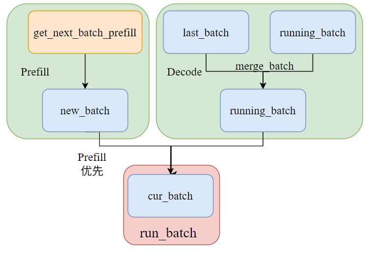
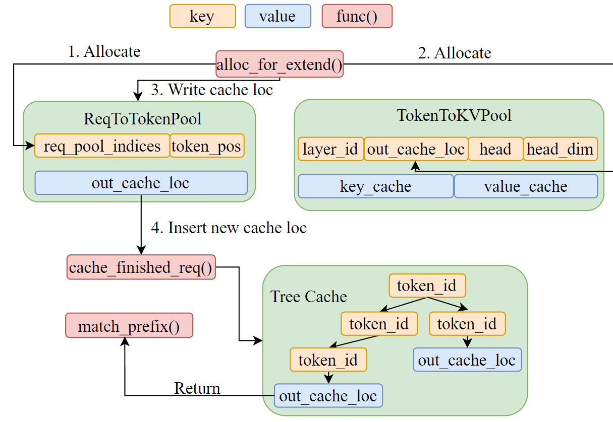
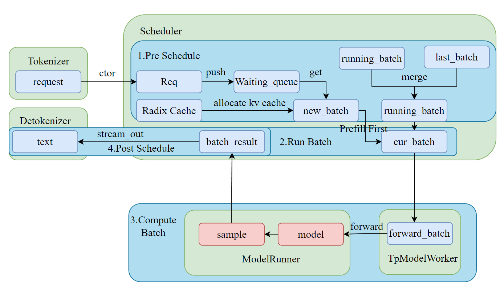
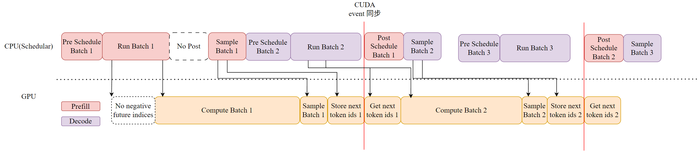
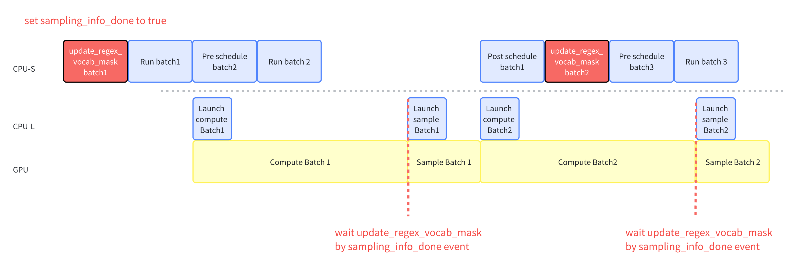

Evolution of SGLang Scheduler
English version | 简体中文
About the author: I am Liu Zhiyi, a second-year master's student in UESTC(graduating in 2027). I am currently looking for an internship in llm inference acceleration. Please feel free to contact me! tomlzy213@gmail.com
- Initially, the Scheduler operated with CPU and GPU in serial, leading to significant GPU idle time.
- Later versions of the Scheduler allowed for CPU and GPU overlap, achieving a zero-overhead scheduler.
The overall workflow of the Scheduler is shown in the figure below: 3

We will analyze the entire Scheduler process in conjunction with the code. However, before diving into the workflow, we first need to understand the key data structures in scheduling and how they transform into one another.
Key Structure
Scheduler
The Scheduler component is responsible for managing Active Requests. The following core global data structures are used to maintain these Active Requests within the Scheduler.
waiting_queue:
- Purpose:
waiting_queueis a data structure designed to hold Active Requests. It dynamically reorders these requests based on priority (longest prefix of the Request) or available memory to optimize batch processing. - Additional Points
- Enqueue
- Newly arrived Requests.
- Requests returned from
retract_decode.
- Dequeue The request with the highest current priority is dequeued to form a batch.
new_batch:
- Purpose: Represents a batch of Requests ready for the prefill/extend phase.
- Additional Points
- Chunked Prefill: If the number of tokens required by a Request exceeds available memory (
remaining_tokens), it may be chunked into smaller parts. - Requests in
new_batchwill undergo prefill/extend. - After prefill/extend,
new_batchwill transition to the Global Batch for the next iteration.
running_batch:
- Purpose: A batch of Requests ready for the decode phase.
- Initialized as an empty batch:
ScheduleBatch(reqs=[], batch_is_full=False) - Can dynamically add newly prefilled requests.
- Can remove completed requests.
- Additional Points
- Retracted: If available memory is insufficient during decode, the
Schedulermay retract certain Requests from therunning_batchviaretract_decode, returning them to thewaiting_queuefor later processing.
cur_batch:
- Purpose: The batch of Requests currently being processed in the
Schedulermain loop (run_batchfunction).prefilltakes precedence. - Additional Points
cur_batchis assigned inevent_loop_normal.- The logic for forming
cur_batchis:- If there are Requests ready for prefill (
new_batch) in this round,new_batchis used ascur_batch. - Otherwise,
cur_batchwill process Requests ready for decode, sorunning_batchis used ascur_batch.
- If there are Requests ready for prefill (

Three Important Batches
Overview:
ScheduleBatchis managed byschedule.py::Scheduler. It contains high-level scheduling data, most of which resides on the CPU.ModelWorkerBatchis managed bytp_worker.py::TpModelWorker. It is a subset ofScheduleBatch, containing only data relevant to model forward on the GPU, and it transitions from the CPU scheduler to the GPU model runner.ForwardBatchis managed bymodel_runner.py::ModelRunnerand contains low-level tensor data.
ScheduleBatch:
class ScheduleBatch:
reqs: List[Req] # List of requests
req_to_token_pool: ReqToTokenPool # Request to token mapping pool
token_to_kv_pool_allocator: BaseTokenToKVPoolAllocator # KV cache allocator
tree_cache: BasePrefixCache # Prefix cache tree
forward_mode: ForwardMode # Forward mode
# Batch related
input_ids: torch.Tensor # Input token IDs
seq_lens: torch.Tensor # Sequence lengths
extend_lens: List[int] # Extend lengths (seq_len - prefix_len)
prefix_lens: List[int] # Prefix lengths
ModelWorkerBatch:
class ModelWorkerBatch:
forward_mode: ForwardMode
input_ids: torch.Tensor # Input token IDs
req_pool_indices: torch.Tensor # Indices of out_cache_loc corresponding to req
seq_lens: torch.Tensor # Sequence lengths
out_cache_loc: torch.Tensor # Allocated KV cache
# Extension related (seq - prefix)
extend_num_tokens: Optional[int]
extend_seq_lens: Optional[List[int]]
extend_prefix_lens: Optional[List[int]]
ForwardBatch:
class ForwardBatch:
forward_mode: ForwardMode
batch_size: int
input_ids: torch.Tensor
seq_lens: torch.Tensor
positions: torch.Tensor # Position encoding
# Attention related
attn_backend: AttentionBackend
token_to_kv_pool: KVCache
# Extension information (seq - prefix)
extend_num_tokens: Optional[int]
extend_start_loc: Optional[torch.Tensor]
extend_prefix_lens: Optional[torch.Tensor]
Batch Transformation:
# 1. Scheduler creates ScheduleBatch
def run_batch(self, batch: ScheduleBatch):
# 2. Convert to ModelWorkerBatch
model_worker_batch = batch.get_model_worker_batch()
# 3. TpModelWorker processing
def forward_batch_generation(self, model_worker_batch: ModelWorkerBatch):
# 4. Convert to ForwardBatch
forward_batch = ForwardBatch.init_new(model_worker_batch, self.model_runner)
# 5. ModelRunner executes forward pass
logits_output, can_run_cuda_graph = self.model_runner.forward(forward_batch)
# 6. Sample to generate token
next_token_ids = self.model_runner.sample(logits_output, forward_batch)
return GenerationBatchResult(
logits_output=logits_output,
next_token_ids=next_token_ids,
can_run_cuda_graph=can_run_cuda_graph,
)
Cache
In SGLang, caching mainly involves three structures: req_to_token_pool, token_to_kv_pool, and tree_cache.
req_to_token_pool[req_idx]:
┌─────────────────────────────────────────────────────────────┐
│ Prefix Part (1984 tokens) │ New Chunk Part (2000 tokens) │
├─────────────────────────────────────────────────────────────┤
│ [loc_1, loc_2, ..., loc_1984] │ [loc_1985, ..., loc_3984] │
└─────────────────────────────────────────────────────────────┘
Position: 0 1984 3984
KV Cache Pool:
┌──────┬──────┬──────┬──────┬──────┬──────┬──────┬──────┐
│loc_1 │loc_2 │ ... │loc_1984│loc_1985│ ... │loc_3984│ ... │
├──────┼──────┼──────┼──────┼──────┼──────┼──────┼──────┤
│ k1,v1│ k2,v2│ ... │k1984,v1984│k1985,v1985│ ... │k3984,v3984│ ... │
└──────┴──────┴──────┴──────┴──────┴──────┴──────┴──────┘
ReqToTokenPool:
- Manages the mapping from req_idx to token position.
- Allocates fixed memory slots for each request.
- Maintains the logical contiguous layout of the request's token sequence in memory.
class ReqToTokenPool:
def __init__(self, size: int, max_context_len: int, device: str, enable_memory_saver: bool):
# Main storage structure: [number of requests, max context length]
self.req_to_token = torch.zeros(
(size, max_context_len),
dtype=torch.int32,
device=device
)
self.free_slots = list(range(size)) # List of free slots
self.size = size
self.max_context_len = max_context_len
token_to_kv_pool:
- Manages allocation and deallocation of physical KV cache.
- Handles page-aligned memory allocation (if paging is enabled).
- Supports different allocation strategies (contiguous allocation, paged allocation, etc.).
Tree Cache:
It is essentially the organizational structure connecting the two pools. The scheduler accesses it frequently during scheduling to allocate slots in req_to_token_pool and token_to_kv_pool for requests.
tree_cacheplays a key role in scheduling policy, determining when the current request is prefilled based on prefix matching.-
page_sizedetermines the granularity of prefix matching, key matching strategy, and paged matching algorithm. -
page_size = 1means exact token-by-token matching, capable of matching prefixes of any length. page_size > 1means prefix matching by page (usingtuple(tokens)as key).
```python # page_size = 1 root └── 1 (child_key=1) └── 2 (child_key=2) └── 3 (child_key=3) └── 4 (child_key=4) └── 5 (child_key=5)
# page_size = 4 root └── (1,2,3,4) (child_key=(1,2,3,4)) └── (5,6,7,8) (child_key=(5,6,7,8)) ```
Relationship:
When a new request enters:
- First, perform longest prefix matching to find the corresponding KV index.
req_to_token_poolallocates free slots forextend_tokento get thereq_pool_idx.token_to_kv_pool_allocatorallocates new KV Cache.- Update the mapping between
req_pool_idxand KV Cache.
# Directly allocate KV cache needed for extend tokens of all reqs in this batch
out_cache_loc = alloc_token_slots(batch.tree_cache, batch.extend_num_tokens)
# update mapping (prefix + extend)
req_to_token_pool.write(
(req_idx, slice(0, prefix_len)),
prefix_tensors[i],
)
req_to_token_pool.write(
(req_idx, slice(prefix_len, seq_len)),
out_cache_loc[pt : pt + extend_len],
)

PrefillAdder
It is the core component in SGLang Scheduler responsible for batching prefill and decode requests. Its main role is to select suitable requests from the waiting queue and assemble them into a prefill batch that can be executed efficiently.
If Mixed Chunk is enabled, a batch can contain both prefill and decode requests simultaneously.
class PrefillAdder:
def __init__(self, ...):
self.page_size = page_size # memory page size
self.tree_cache = tree_cache # radix kv cache
self.token_to_kv_pool_allocator = token_to_kv_pool_allocator # kv cache pool
self.running_batch = running_batch # currently running decode batch
self.new_token_ratio = new_token_ratio # new token generation ratio
self.can_run_list = [] # list of runnable requests
self.preempt_list = [] # list of preempted requests
self.new_chunked_req = None # new chunked request
self.log_hit_tokens = 0 # number of cache hit tokens
self.log_input_tokens = 0 # input token statistics
@property
def rem_total_tokens(self):
"""Calculate total remaining available tokens"""
def add_one_req(self, req: Req, has_chunked_req: bool, truncation_align_size: Optional[int]):
"""Add a request to the batch"""
def add_chunked_req(self, req: Req):
"""Handle chunked prefill request"""
def preempt_to_schedule(self, req: Req, server_args: ServerArgs) -> bool:
"""Preempt low-priority requests to make way for high-priority ones"""
GenerationBatchResult
logits_output: Optional[LogitsProcessorOutput]
- Role: Contains the complete logits output and related information from the model's forward pass.
- Content:
- next_token_logits: Logits distribution of the next token
[batch_size, vocab_size] - input_token_logprobs: Log probabilities of input tokens
- hidden_states: Hidden states (used for speculative decoding)
- Various top-k logprobs and token probability information
- Usage: Used for sampling, calculating probabilities, and returning logprob information to the user.
next_token_ids: Optional[torch.Tensor]
- Role: The next token ID after sampling.
- Shape:
[batch_size] - Content:
- Prefill mode: The first generated token sampled based on the last position.
- Decode mode: The next token generated in the current step.
- Prefill-only: All-zero placeholder tensor.
- Usage: Directly used to update the request's
output_idsto advance the generation process.
num_accepted_tokens: Optional[int]
- Role: Number of tokens accepted in speculative decoding.
- Usage: Statistics on acceptance rate of speculative decoding, used for performance optimization and metric collection.
next_draft_input: Optional[EagleDraftInput]
- Role: Input information for the next round of EAGLE speculative decoding.
- Content: Includes top-k probabilities, indices, hidden states, etc.
- Usage: Preparing input data for the next round of speculative decoding.
extend_input_len_per_req: Optional[List[int]]
- Role: Extended input length for each request.
- Usage: Knowing how many new tokens were actually processed for each request when processing batch results.
extend_logprob_start_len_per_req: Optional[List[int]]
- Role: The position where each request starts calculating logprob.
- Usage: Determining from which position to start returning logprob information to the user.
copy_done: Optional[torch.cuda.Event]
- Role: Synchronization event for GPU to CPU data transfer completion.
- Usage: Ensuring data transfer is complete before processing results in overlapped scheduling.
delay_sample_func: Optional[callable]
- Role: Delayed sampling function.
- Usage: In overlapped scheduling, execute forward pass first, then execute sampling operation later.
future_indices: Optional[FutureIndices]
- Role: Index information in the Future mechanism.
- Usage: Managing storage and retrieval of asynchronous results in overlapped scheduling.
Normal (No overlap)
LLMs have an autoregressive structure, so whether in Prefill or Decode, what drives them to the next inference step is the predicted next token of the sequence. Data containing next_token_ids is therefore crucial.
In prefill mode, next_token_ids contains:
- Shape:
[batch_size]- one token ID per request. - Content: The next token for each sequence, i.e., the token sampled based on logits from the last position of the input sequence.
- Position: For prefill, only the last position of the sequence is used for sampling.
In decode mode, next_token_ids contains:
- Shape:
[batch_size]- one token ID per request. - Content: The next token generated by each request in the current decoding step.
- Position: Sampling using the current decoding position.
Overview
When a Request enters SGLang Scheduler, it goes through the following stages:
Req -> Pre Schedule(CPU) -> Compute Batch -> Sample(GPU) -> Post Schedule(CPU) -> next Schedule ...

Pre Schedule:
- Collect requests from the TokenizerManager and put them into the waiting queue. (
Schedule::recv_request()&Schedule::process_input_requests()) - Schedule from the waiting queue and
running_batch. (Schedule::get_batch_to_run()) - Prefill involves Radix Tree and Longest Prefix Matching algorithm. (
Req::init_next_round_input()) - Allocate memory resources required for Tokens for each request. (
ScheduleBatch::prepare_for_extend()&ScheduleBatch::prepare_for_decode())
Compute batch:
New requests enter the Prefill phase, and after Prefill ends, they enter the Decode phase.
Prefill Schedule:
get_next_batch_to_run: Prefill takes precedence here, soget_new_batch_prefillis called, and the returnednew_batchis directly used as the batch for this execution round (i.e.,cur_batch).get_new_batch_prefill:
- Create
PrefillAdderto manage batch construction, selecting requests fromwaiting_queue. init_next_round_inputupdates the prefix of the radix tree cache.- Create a new
ScheduleBatch, callprepare_for_extend:- Allocate
req_pool_indices: Assign a unique index position in the request pool for each request. This index is used to store the request's token-to-KV mapping inreq_to_token_pool. - allocate KV cache
- Write the mapping of req to kv cache into
req_to_token_pool.
- Allocate
run_batch(): Execute Prefill inference, callTpModelWorker::forward_batch_generation()->ModelRunner::forward()->ModelRunner::_forward_raw()->ModelRunner::forward_extend(), then execute backend operators and wait for results.
Decode Schedule:
get_next_batch_to_run(): Process completed requests from the previous batch, then merge withrunning_batch.update_running_batch(): - Callprepare_for_decode():output_idsfrom the previous schedule becomeinput_idsfor this one.- Allocate (batch size * 1) slots for
out_cache_loc, because in decode mode we generate only one token per batch at a time.python out_cache_loc = alloc_token_slots(batch.tree_cache, bs * 1)
run_batch(): Execute Decode inference, callTpModelWorker::forward_batch_generation()->ModelRunner::forward()->ModelRunner::_forward_raw()->ModelRunner::forward_decode(), then execute backend operators and wait for results.
Sample:
TpModelWorker::forward_batch_generation():
- If not in overlap mode, perform Sample immediately; otherwise, overlap CPU and GPU for delayed sampling.
- Sample to get
next_token_idsof the batch for use in the next batch forward.python sampling_info.update_regex_vocab_mask() sampling_info.apply_logits_bias(logits_output.next_token_logits) next_token_ids = self.sampler( logits_output, forward_batch.sampling_info, forward_batch.return_logprob, forward_batch.top_logprobs_nums, forward_batch.token_ids_logprobs, # For prefill, we only use the position of the last token. ( forward_batch.positions if forward_batch.forward_mode.is_decode() else forward_batch.seq_lens - 1 ), )
Post Schedule:
- Prefill:
process_batch_result_prefill() - Get results, call
tree_cache'scache_unfinished_req()to retain the cache for that req. - Decode:
process_batch_result_decode(): - Check each Req; if completed, release the corresponding KV cache in
tree_cache(batch release after loop interpretation). - Return batch results via
stream_out()to detokenizer for next steps.
Event Loop
- Requests will first execute the prefill phase and then the decode phase until EOS is obtained or exit for other reasons.
def event_loop_normal(self):
"""A normal scheduler loop."""
while True:
recv_reqs = self.recv_requests()
self.process_input_requests(recv_reqs)
batch = self.get_next_batch_to_run()
self.cur_batch = batch
if batch:
result = self.run_batch(batch)
self.process_batch_result(batch, result)
else:
# When the server is idle, do self-check and re-init some states
self.self_check_during_idle()
self.last_batch = batch
Pre Schedule
Req -> Waiting_queue:
-
First execute
recv_requests: -
Only Pipeline rank = 0 can get requests from tokenizer via zmq.
- Other pipeline ranks get requests from the previous pipeline.
-
work_reqsare broadcast inattn_tp; systemcontrol_reqsare broadcast across the entiretp_size. -
Then execute
process_input_requests1. Extract worker_id:worker_id = recv_req.worker_id2. Unpack request:recv_req = recv_req.obj3. Dispatch processing:output = self._request_dispatcher(recv_req)Call request dispatcher.- Construct
recv_reqas a newReqobject. - Call
_add_request_to_queue()to insertReqintowaiting_queue. 4. Send response: Send output back to the corresponding tokenizer worker process.
- Construct
Waiting_queue/running_batch -> cur_batch:
Get prefill batch get_new_batch_prefill():
- Create
PrefillAdder, chunk new requests, then process multiple chunks at a time. init_next_round_input():- Construct full sequence: original input tokens + generated output tokens.
- Max prefix length calculation: Cache up to the second to last token (
input_len - 1).The model needs an input token to query these cached historical information and calculate the logits (probability distribution) for the current step. If we count all tokens as prefix tokens and read them from cache, then there is no "input token" fed to the model for the current step, and the model cannot calculate the logits for $t+1$. Therefore, we must keep the last token out of prefix matching and let it be the
input_idsto the model for this inference. - Prefix matching:
- When Request
ABCarrives, assume there is a nodeAFGin the current radix cache. match_prefixwill try to find the longest prefix of existingABCin the current radix cache, meaning it will findAin theAFGnode.- Radix cache will split this node
AFGintoAandFG, with nodeAbecoming the last node of the current Request.
- Create a new
ScheduleBatch. -
Call
ScheduleBatch::prepare_for_extend() -
Allocate
req_pool_indicesto assign a unique index position in the request pool for each request. This index is used to store the request's token-to-KV mapping inreq_to_token_pool.- allocate kv cache: [Total input tokens per Request - matched prefix tokens]
out_cache_loc. - Write mapping of req to kv cache into
req_to_token_pool.
```python req_to_token_pool[req_idx]: ┌─────────────────────────────────────────────────────────────┐ │ Prefix Part (1984 tokens) │ New Chunk Part (2000 tokens) │ ├─────────────────────────────────────────────────────────────┤ │ [loc_1, loc_2, ..., loc_1984] │ [loc_1985, ..., loc_3984] │ └─────────────────────────────────────────────────────────────┘ Position: 0 1984 3984
KV Cache Pool: ┌──────┬──────┬──────┬──────┬──────┬──────┬──────┬──────┐ │loc_1 │loc_2 │ ... │loc_1984│loc_1985│ ... │loc_3984│ ... │ ├──────┼──────┼──────┼──────┼──────┼──────┼──────┼──────┤ │ k1,v1│ k2,v2│ ... │k1984,v1984│k1985,v1985│ ... │k3984,v3984│ ... │ └──────┴──────┴──────┴──────┴──────┴──────┴──────┴──────┘ ```
- allocate kv cache: [Total input tokens per Request - matched prefix tokens]
Get decode batch:
- First remove completed or errored batches from the batch, then merge the previous round's decode batch with
running_batch. - Essentially concatenating
seq_lens,orig_seq_lens,output_ids, etc. usingtorch.cat. -
Call
update_running_batch()to get decode batch. -
First check if requests need to be retracted.
- If so, re-insert requests to be retracted into
waiting_queueand re-queue for scheduling. -
Call
ScheduleBatch::prepare_for_decode()- Previous round output as this round's input.
- Memory allocation + sequence length update.
```python
Assume batch has 3 requests, current lengths are [10, 15, 8]
Decode needs to allocate space for the next position of each request
KV cache mapping before allocation
req_to_token_pool[req1_idx, 0:10] = [loc1, loc2, ..., loc10] req_to_token_pool[req2_idx, 0:15] = [loc11, loc12, ..., loc25] req_to_token_pool[req3_idx, 0:8] = [loc26, loc27, ..., loc33]
After executing alloc_for_decode
req_to_token_pool[req1_idx, 10] = loc34 # Allocate for position 10 req_to_token_pool[req2_idx, 15] = loc35 # Allocate for position 15 req_to_token_pool[req3_idx, 8] = loc36 # Allocate for position 8
out_cache_loc = [loc34, loc35, loc36]
A faster in-place version
self.seq_lens.add_(1) self.seq_lens_cpu.add_(1) self.orig_seq_lens.add_(1)
update all length
self.seq_lens_sum += bs # bs = batch_size ```
Compute Batch & Sample
Here we temporarily only consider the generation case (there is also the Embedding case).
- Convert
ScheduleBatchtoModelWorkerBatch. - Call
TpModelWorker::forward_batch_generation() - Convert
ModelWorkerBatchtoForwardBatch. - Call
ModelRunner::forward(), finally calling backend flashinfer operators.- Prefill executes
ModelRunner::forward_extend(). - Decode executes
ModelRunner::forward_decode().
- Prefill executes
- Immediately perform Sample to get the next token based on logits.
- Return result
GenerationBatchResult.
Post Schedule
Prefill:
- Unpack
GenerationBatchResult. - Execute
synchronize()to wait for GPU→CPU copy completion, ensuring subsequent data access is available on CPU. - Iterate through each request in the batch.
- Update generation results.
- Update logprob.
- Special handling for Chunked requests:
is_chunked > 0indicates prefill is not yet fully complete, need to decrement counter and skip streaming output. - Output streaming results: Call
stream_output()to send results (token, logprob, etc.) to the client (e.g., WebSocket / API response).
Decode:
[GPU forward kernel]
↓ (Result written to GenerationBatchResult)
[Scheduler.process_batch_result_decode()]
├── copy_done.synchronize()
├── next_token_ids.tolist()
├── Update req status
├── req.output_ids.append(next_token_id)
├── if finished, self.tree_cache.cache_finished_req(req) # Release kv cache
├── stream_output()
└── free KV pages
Why Overlap?
Running the actual scheduling algorithm accounts for only a small fraction of the total scheduling overhead. Most of the overhead comes from model input preparation and model output post-processing. Specifically, the largest overheads come from constructing input tensors (Pre Schedule), executing output detokenization (Post Schedule), and preparing metadata for each request (Pre Schedule)2.
Overhead in constructing model input tensors and sampling metadata mainly stems from Python.
Using multi-step scheduling can reduce total scheduling overhead, but it also has drawbacks. For example, between two scheduling calls, even if some requests finish early, new requests cannot be added to the batch.
- vLLM's multi-step decode
- SGLang's speculative group execution
Zero-Overhead Scheduling (Overlap)
Principle
Before introducing the principle, we need to recall the four major steps of the inference process above and consider which steps can be overlapped to reduce GPU bubbles (idle periods). Here is a diagram of the current overlap pipeline.

Inference Overview:
SGLang's inference process is mainly divided into the following four stages:
- Pre schedule:
- Collect requests from TokenizerManager and put them into waiting queue. (
Scheduler::recv_request()&Scheduler::process_input_requests()) - Schedule from waiting queue andrunning_batch. (Scheduler::get_batch_to_run())- Prefill involves Radix Tree and Longest Prefix Matching algorithm. (
Req::init_next_round_input()) - Allocate memory resources required for Tokens for each request. (
ScheduleBatch::prepare_for_extend()&ScheduleBatch::prepare_for_decode())
- Prefill involves Radix Tree and Longest Prefix Matching algorithm. (
- Compute batch:
- Send batch to GPU for one step (i.e., one iter of Continue Batch) inference. (
Scheduler::run_batch()) - Sample:
- Sample based on Logit output from model to generate next Token. (
ModelRunner::sample())We will apply vocab mask during sampling to ensure invalid tokens are not sampled, so we need to update the vocab mask before sampling next batch.
- Post schedule:
- After one inference step, dynamically check if requests meet finish condition (Check Finish Condition). (
Scheduler::process_batch_result())
- Remove completed requests from the batch, send them to the detokenizer, then return results to the DetokenizerManager, and finally forward them to the TokenizerManager.
Overlap Overview1:
The Compute batch and Sample stages, which are adjacent, are GPU-heavy, while the two schedule stages are CPU-heavy. When multiple batches are pipelined, we can use GPU Compute and Sample to overlap the post scheduler of the previous batch with the pre scheduler of the current batch.
The Grammar Mask in the Prefill stage is usually based on the prompt, so we can just sample it here.
We implement overlap by using CUDA Stream + FutureMap, specifically:
- In
Run Batch, two operations are submitted to theforward_streamstream: one retrieves the next token of the previous batch fromFutureMap; the other uses this token asinput_idfor the next calculation. - In
Sample, two operations are also submitted to theforward_streamstream: one performs sampling; the other writes the obtained next token back to FutureMap. - We should note that sampling is relied on the vocab mask, which is prepared in the
Post Schedulestage. Therefore, we need to ensure that thePost Scheduleof the previous batch is completed before executing sampling of the current batch. - Actually, it is ensured by the logic in CPU event loop:
Post Schedule 1is executed beforeLaunch Sample 2. - We need to synchronize CPU and GPU before processing data in
Post Scheduleto ensurenext_token_idson CPU can be processed. - We perform synchronization in Post Schedule, ensuring subsequent processing runs normally without affecting GPU pipeline work.
python def process_batch_result_decode( self: Scheduler, batch: ScheduleBatch, result: GenerationBatchResult, ): if result.copy_done is not None: result.copy_done.synchronize() logits_output, next_token_ids, can_run_cuda_graph = ( result.logits_output, result.next_token_ids, result.can_run_cuda_graph, ) next_token_ids = next_token_ids.tolist() next_token_logprobs = logits_output.next_token_logprobs.tolist()
Init Overlap
- forward_stream: Dedicated to GPU forward computation, parallel to default stream.
- copy_stream: Handles GPU->CPU data transfer.
- future_map: Manages asynchronous calculation results, using negative indices as future identifiers.
output_idcalculated by previous batch serves asinput_idfor next batch, implemented by accessingfuture_map.- batch_record_buf: Batch buffer (prevents GPU tensors from being GC'd).
def init_overlap(self):
if not self.enable_overlap:
return
self.forward_stream = torch.cuda.Stream() # GPU forward computation stream
# Future map manages asynchronous results
self.future_map = FutureMap(max_running_requests, device, spec_algorithm)
# batch buffer (prevents GPU tensors from being GC'd)
self.batch_record_buf = [None] * 2
self.batch_record_ct = 0
Workflow
1. Allocation (Alloc) — CPU stage
- Execute future_indices = self.future_map.alloc_future_indices(bs) to obtain a set of negative indices (e.g., [-1, -2, -3]) that indicate “where the future results will be stored.”
- These negative indices will be used as the input_ids for the next batch.
-
Store — GPU stage (Batch N) - After Batch N finishes Forward + Sample on the GPU, the real token IDs are available in the batch result. - Execute
self.future_map.store_to_map(future_indices, batch_result)to copy the newly generatednext_token_idsin GPU memory directly into the corresponding buffer locations in the FutureMap. - This is completed on the GPU; no copy back to the CPU is required. -
Resolve — GPU stage (Batch N+1) - Before Batch N+1 starts the Forward pass on the GPU, it needs to replace the negative tokens in its input with the real tokens produced by the previous batch. - Execute
self.future_map.resolve_future(model_worker_batch)to substitute the negative indices ininput_idswith the real token IDs stored in the FutureMap. - Because GPU commands on a stream execute in order, the Store of Batch N always happens before the Resolve of Batch N+1.
FutureMap
Stored on GPU.
future_ct: Current ring counter (pointer), used to generate new future indices (not "number of unfinished").future_limit: Modulo for ring pointer (used for% self.future_limit). The code uses a factor of*3to reduce index collision probability (preventingfuture_ctfrom wrapping around quickly and overwriting slots not yet written back).-
future_buffer_len: Actual physical buffer length (*5), longer thanfuture_limitto ensure enough space in write interval (preventing slice out-of-bounds or wrap-around write/read conflicts). -
These two factors (3 and 5) are engineering empirical values used to increase safety margin; you can adjust based on concurrency and outstanding futures.
class FutureMap:
def __init__(
self,
max_running_requests: int,
):
self.future_ct = 0
# A factor of 3 is used to avoid collision in the circular buffer.
self.future_limit = max_running_requests * 3
# A factor of 5 is used to ensure the buffer is large enough.
self.future_buffer_len = max_running_requests * 5
Overlap Event Loop
def event_loop_overlap(self):
self.result_queue = deque() # Store (batch, result) pairs
while True:
# === Pre Schedule 2 ===
recv_reqs = self.recv_requests()
self.process_input_requests(recv_reqs)
batch = self.get_next_batch_to_run()
self.cur_batch = batch
batch_result = None
if batch:
# === Launch Compute Batch 2 ===
batch_result = self.run_batch(batch) # Non-blocking launch
self.result_queue.append((batch.copy(), batch_result))
# === Post Schedule 1 ===
# compute batch 2 executes in parallel with post schedule 1
if self.last_batch:
# Process results in queue (GPU is computing current batch in parallel at this time)
tmp_batch, tmp_result = self.result_queue.popleft()
self.process_batch_result(tmp_batch, tmp_result)
elif batch is None:
self.self_check_during_idle()
# === Launch Sample 2 ===
self.launch_batch_sample_if_needed(batch_result) # update vocab mask
self.last_batch = batch
Differences from normal event loop
Schedule::run_batch()Schedule::record_batch_in_overlap(): Alternately storesmodel_worker_batchreferences in two overlapping batches, avoiding CUDA kernel accessing dangling pointers or freed memory when overlap forward is not yet finished.FutureMap::resolve_future(): Replaces negative index placeholders with real tokens obtained from previous batch sample.TpModelWorker::forward_batch_generation(), this function merely delays execution ofmodel_runner.samplefunction, returningbatch_resultfirst.- Added
Scheduler::launch_batch_sample_if_needed(): - Execute real Sample operation.
- Mask illegal tokens, allocate
vocab_masktensor size[batch, vocab_size]. - Move mask to CPU.
- Mask illegal tokens, allocate
- Store obtained
next_token_idto corresponding position inFutureMap'sfuture_indices.- For next batch to get real token in
resolve_futureduringrun_batch.
- For next batch to get real token in
Dependency & Solutions
The Sample stage depends on the previous batch's logits output - The CPU-side scheduling logic guarantees that the current Sample stage is executed after the previous Post Schedule stage.
The Decode Compute batch stage depends on the previous batch's next token - FutureMap acts as a bridge: the CPU first fills negative-index placeholders; the GPU stores real tokens during the Sample stage and then retrieves them during the next Compute batch stage. - CUDA Stream ordering guarantees that the previous Sample completes before the next Compute begins, so the Decode stage will not read incorrect negative “token” placeholders.
# previous batch output is negative indices
batch.output_ids = -self.future_map.alloc_future_indices(bs).indices
with self.forward_stream_ctx:
self.forward_stream.wait_stream(self.default_stream)
_batch_result = batch_result.delay_sample_func()
assert _batch_result is batch_result
# store token to negative indices
self.future_map.store_to_map(batch_result.future_indices, batch_result)
batch_result.copy_to_cpu()
# next batch input is output of previous batch
with self.forward_stream_ctx:
self.forward_stream.wait_stream(self.default_stream)
# get token from negative indices
self.future_map._resolve_future_token_ids(model_worker_batch.input_ids, self.token_ids_buf)
batch_result = self.model_worker.forward_batch_generation(
model_worker_batch
)
Differences from previous overlap version
- Moved
update_vocab_maskto GPU for calculation(Now in Sampling),vocab_maskis also allocated directly on GPU, no longer transferred. - Current GPU is additionally responsible for storing (after sample) and retrieving (before compute)
next_token_idsto/fromFutureMap. FutureMapis also completely stored on GPU.- GPU scheduling changed from CPU launch to directly submitting operations to the CUDA stream, scheduled by the stream itself.
- For sample synchronization, the previous version used a CUDA event; here we directly use CUDA stream ordering constraints for synchronization.

Pros and Cons of the Two Versions
CUDA stream version:
- Higher execution efficiency: No CPU-GPU transfer for
vocab_maskandtoken_ids_buf; fully utilizes GPU memory bandwidth. - Lower latency:
token_ids_bufmodified in-place directly on GPU, no need for repeated transfer. - On same device as model inference, facilitating pipelining.
- Large non-model VRAM usage:
token_ids_bufoccupies GPU VRAM, fixed overhead.
CPU launch version:
- Occupies GPU memory only when in use.
- Increased synchronization points:
vocab_maskadds one CPU-GPU synchronization. - CPU-GPU synchronization breaks pipeline.